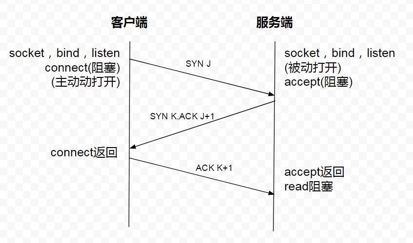

就是为什么Http是无状态的短连接，而TCP是有状态的长连接？Http不是建立在TCP的基础上吗，为什么还能是短连接？
现在明白了，Http就是在每次请求完成后就把TCP连接关了，所以是短连接。而我们直接通过Socket编程使用TCP协议的时候，因为我们自己可以通过代码区控制什么时候打开连接什么时候关闭连接，只要我们不通过代码把连接关闭，这个连接就会在客户端和服务端的进程中一直存在，相关状态数据会一直保存着。
一：tcp协议
tcp协议属于传输层协议（UDP也属于传输层协议，但是UDP协议是无状态的）。建立一个TCP连接需要三次握手，断开一个TCP连接需要四次挥手。手机能够使用联网功能，是因为手机底层实现了TCP/IP协议，使用手机终端通过无线网就可以与服务端建立一个tcp连接。TCP协议可以对上层网络提供接口，使上层网络数据的传输建立在“无差别”的网络之上。
tcp建立连接需要三次握手：

图1：tcp连接三次握手示意图
如图所示：客户端要与服务端建立tcp连接，首先向服务端发送一个syn J信号，服务端收到此信号后向客户端回答一个ACK J+1信号，并额外加了一个syn K信号，客户端收到ACK J+1信号后就知道，服务端能收到我的信号，后面我客户端就可以放心的发送数据给你服务端而不用担心你服务端接收不到我发送的数据了。客户端收到服务端发送的SYN K信号后，还需要向服务端回一个 ACK K+1信号，这样服务端收到此信号就知道，我服务端给你客户端发送的信号，你客户端能够收到，这样我服务端就可以放心的给你客户端发送数据而不用担心你客户端收不到自己发送的数据了。其实从上面的描述可以看到：建立连接完全可以跟断开TCP连接一样分四步走，只不过是把服务端的应答信号ACK和客户端的认证请求信号SYNC这两步做成一步走了。
tcp连接关闭时需要四次挥手：

图2：tcp连接断开时四次挥手示意图
客户端收到服务端的应答信号ACK M+1后，客户端就知道：服务端知道我客户端不会再发送数据包给你服务端了，你可以停止对我的监听了。但是此时只是客户端->服务端的单向流动停止了，另一个方向的流动：服务端->客户端的数据发送还可以正常进行，直到服务端向客户端发送FIN N挥手信号，客户端向服务端回应ACK N+1信号，服务端才知道:客户端知道我服务端不会再发送数据包给你客户端了，你可以停止对我的监听了。至此，客户端->服务端的单向流动和服务端->客户端的单向流动两个方向都停止，可以关闭连接了。
二：http协议
http协议，简称超文本传输协议(Hypertext Transfer Protocol)，是web应用程序的基础，也是手机联网常用的协议之一。http协议在tcp协议上面，属于应用层协议。
http协议最显著的特点就是：客户端发送的每次请求，都需要服务端返回响应。客户端收到服务端的响应后，主动关闭连接。一次TCP连接过程完成。
1）在HTTP1.0中，客户端每发送一次请求都需要新建一个单独的连接，得到服务端响应后，主动断开本次连接。
1）在HTTP1.1中，可以在一次连接中处理多次请求(keep Alive，默认开启)，尽管有 Keep-Alive 机制可以复用，但在每个连接上同时只能有一个请求 / 响应，这意味着完成响应之前，这个连接不能用于其他请求。比如某个tcp连接的keep Alive的参数设置为：max=5，time_out=10s(本次连接最长存活时间为10s，最多请求次数为5次),则请求情况像下面这样：
图3：http1.1一次keep alive连接示意图
而不是像这样：
图4：http1.1一次keep alive连接错误示意图
从图3中可以看到，如果浏览器需要向同一个域名发送多个请求，需要在本地维护一个 FIFO 队列，完成一个再发送下一个。这样，从服务端完成请求开始回传，到收到下一个请求之间的这段时间，服务端处于空闲状态。
后来，人们提出了 HTTP 管道（HTTP Pipelining）的概念，试图把本地的 FIFO 队列挪到服务端。它的原理是这样的：浏览器一股脑把请求都发给服务端，然后等着就可以了。这样服务端就可以在处理完一个请求后，马上处理下一个，不会有空闲了。甚至服务端还可以利用多线程并行处理多个请求。但是由于一些原因，http1的管道技术使用得并不完美和普及。
http连接下，客户端保持在线状态的方法：客户端每次建立http连接，得到服务端响应后，都会主动断开连接，所以说http连接是短连接。那怎么保持客户端的在线状态呢？答案就是：客户端需要不断的向服务端发送连接请求。通常的做法是，客户端也保持每隔一段固定的时间向服务器发送一次“保持连接”的请求，服务器在收到该请求后对客户端进行回复，表明知道客户端“在线”。若服务器长时间无法收到客户端的请求，则认为客户端“下线”，若客户端长时间无法收到服务器的回复，则认为网络已经断开。
为什么说http连接是无状态的？
【无状态】能在其他资料中查到的说法有：
(1)协议对于事务处理没有记忆能力，(2)对同一个url请求没有上下文关系，(3)每次的请求都是独立的，它的执行情况和结果与前面的请求和之后的请求是无直接关系的，它不会受前面的请求应答情况直接影响，也不会直接影响后面的请求应答情况，(4)服务器中没有保存客户端的状态，客户端必须每次带上自己的状态去请求服务器，(5)人生若只如初见，可以参考：http协议无状态中的 状态 到底指的是什么？！，文中经过分析理清了很多概念，以及之间的关系，推测出【状态】的含义就是：客户端和服务器在某次会话中产生的数据，从而【无状态】就意味着，这些数据不会被保留。
三：socket
我们知道两个进程如果需要进行通讯最基本的一个前提能能够唯一的标示一个进程，在本地进程通讯中我们可以使用PID来唯一标示一个进程，但PID只在本地唯一，网络中的两个进程PID冲突几率很大，这时候我们需要另辟它径了，我们知道IP层的ip地址可以唯一标示主机，而TCP层协议和端口号可以唯一标示主机的一个进程，这样我们可以利用ip地址＋协议＋端口号唯一标示网络中的一个进程。
能够唯一标示网络中的进程后，它们就可以利用socket进行通信了，什么是socket呢？我们经常把socket翻译为套接字，socket是在应用层和传输层之间的一个抽象层，它把TCP/IP层复杂的操作抽象为几个简单的接口供应用层调用已实现进程在网络中通信。

图5：socket通信系统模块示意图
tcp服务端和tcp客户端使用socket通信的过程如下。从图中可以看到，socket连接可以保持长连接。
图6：基本socket客户/服务端通信流程示意图
注意的是，socket连接可以由客户端主动关闭，也可以由服务端主动关闭。